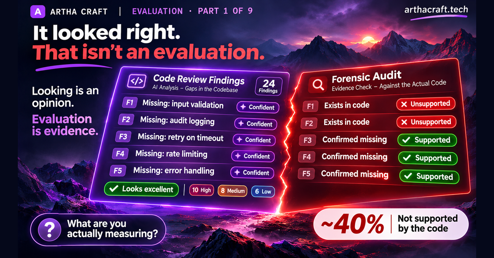

Wrong reads as well as right
Models produce confident, fluent, false content, and NIST lists it as a core generative AI risk. [2] The report above is a typical case: the errors carried the same tone and structure as the correct findings.
Why reading the output is not testing it, what to measure instead, and the four levels where evaluation has to happen.

We once asked an AI to review our own codebase and list what was missing. The report came back clear, well structured and confident.
About 40 percent of its findings were wrong once we checked them against the code. [1] It marked things as missing that already existed, and nothing in the report gave that away.
In the last Craft Note I wrote that you should verify what the model returns, which is easy to say and hides most of the work. How do you verify output you did not write, at a volume no person can read, from a component that may answer differently tomorrow?
Evaluation is how, and the subject is big enough to need its own arc. This is Part 1 of 9.
Most teams evaluate an LLM feature the way they review a document. Someone reads a handful of outputs and decides they look right. That fails for three reasons.
Models produce confident, fluent, false content, and NIST lists it as a core generative AI risk. [2] The report above is a typical case: the errors carried the same tone and structure as the correct findings.
Research on AI-assisted decisions describes overreliance: people accepting incorrect AI outputs. [3] A reviewer skimming twenty polished answers at the end of a long day is where it tends to happen.
The same input can produce a different answer on another run, even at temperature zero. [4] So five good answers today tell you very little about tomorrow.
If you cannot run it again tomorrow and get a score, you did not evaluate it. You looked at it.
An evaluation is a repeatable test: a fixed set of inputs, a stated expectation for each, and a grader that scores every output the same way every time. Think of it as a test suite for behaviour you cannot assert line by line.
The expectation has to be specific and measurable: "every requirement cites the paragraph it came from" rather than "good answers". Practitioner guidance also favours many automatically graded cases over a few hand-graded ones, [5] because volume finds the failures that samples miss.
Practitioners have been writing down how to evaluate AI products for years: fast automated checks on every change, human and model review on a regular cadence, and expensive experiments only after major changes. [6] This series builds on that guidance rather than replacing it, and adds what happened when we applied it in commercial work for established companies, where the business decides what correct means, evidence has to survive an audit, and people make the final calls.
Quality does not fit in one number, but five questions cover most of what can go wrong.
Does the output have the right shape, the right number of items and the right names? Code checks this. Schema enforcement has largely solved formatting: one provider's adherence on complex schemas went from under 40 percent to 100 percent. [7] It did not solve truth.
Is every claim backed by evidence in the input? In retrieval systems this is called faithfulness, and it can be scored separately from whether the right context was found in the first place. [8]
Does the same input get the same decision across runs and across days? Anything you audit has to pass this one.
When the model says it is confident, is it right? Models that state their confidence in words tend to be overconfident. [9] Until you have tested a confidence score against real outcomes, it tells you nothing you can act on.
Measure tokens and seconds per job. If a version scores slightly better and costs four times as much, adopting it is a trade-off for the business to weigh, which is different from an upgrade.
A single check at a single level will miss things. A response can pass its contract and still be the wrong answer for the task, every step can pass while the journey as a whole fails, and something that passed everything in testing can still drift in production.
The principle holds everywhere, but the cost of ignoring it varies with where you work.
In an established company, evaluation results become evidence: for model risk review, for audit and for internal sign-off. "It looked right" does not survive a risk committee.
Clients will ask how you know it works. Scores per release, on cases they recognise, answer that question better than any demo.
An agent's final answer can look right while a step in the middle went wrong, and if you only evaluate the end state you will never see it.
The first golden set comes from the business: real inputs, approved answers, out-of-bounds cases.
Growing the set on purpose: acceptable, not exact; a threshold the business sets; the full set before every release.
Evidence for every claim, checked against the source, and every output labelled.
Guardrails for model judges, and calibration against the people who know the business.
Agents tend to fail in the middle, so evaluate the path as well as the result.
Value is in what the output carries for the next step.
Layered checks, agents that recommend, people who decide.
Prompts are per model. The intent is the constant.
Every release changes something.
Not all of it on purpose.
Evaluation is how you find out what changed before your users do.
Looking is an opinion. Evaluation is evidence.
Figures marked [1] come from our internal review records, not audited data. Treat them as directional.
Jitander Chauhan